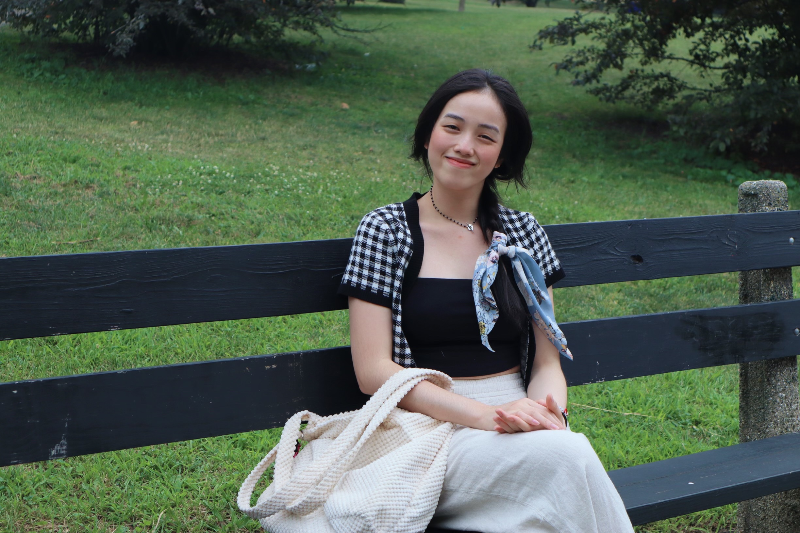

You can contact me through my email vynle@lewisu.edu
My discord username is vyvyle_nhat#4618
My name is Vy Nguyen Nhat Le. You can call me Le. I'm 22 years old. I come from Viet Nam. After studying Business at a university in Vietnam for two years, I decided to stop it and go study abroad. This is probably the biggest decision I've ever made in my life. I came to America 3 years ago to go to college. And I am currently a junior majoring in Computer Science at Lewis University. My family has 5 members. My youngest sister is currently in high school and lives with my parents in Vietnam. One fun fact about me is that I have a twin sister who has the same name with me. My sister is also studying at Lewis and we're living with a host family who have helped me a lot since I first came to the US.
I have a great love for traveling. I think there will be many people with similar interests as me. I often travel with family members. Traveling to new lands helps me to have many different experiences. Traveling is the occasion where I can keep good memories with my family. I hope I will have the opportunity to visit as many US states during my time here. I also enjoy listening to music. However, I don’t have any standards in genre selection, I like to listen to any kind of music as long as it’s good. In my spare time I usually read manga or watch movies or playing games.